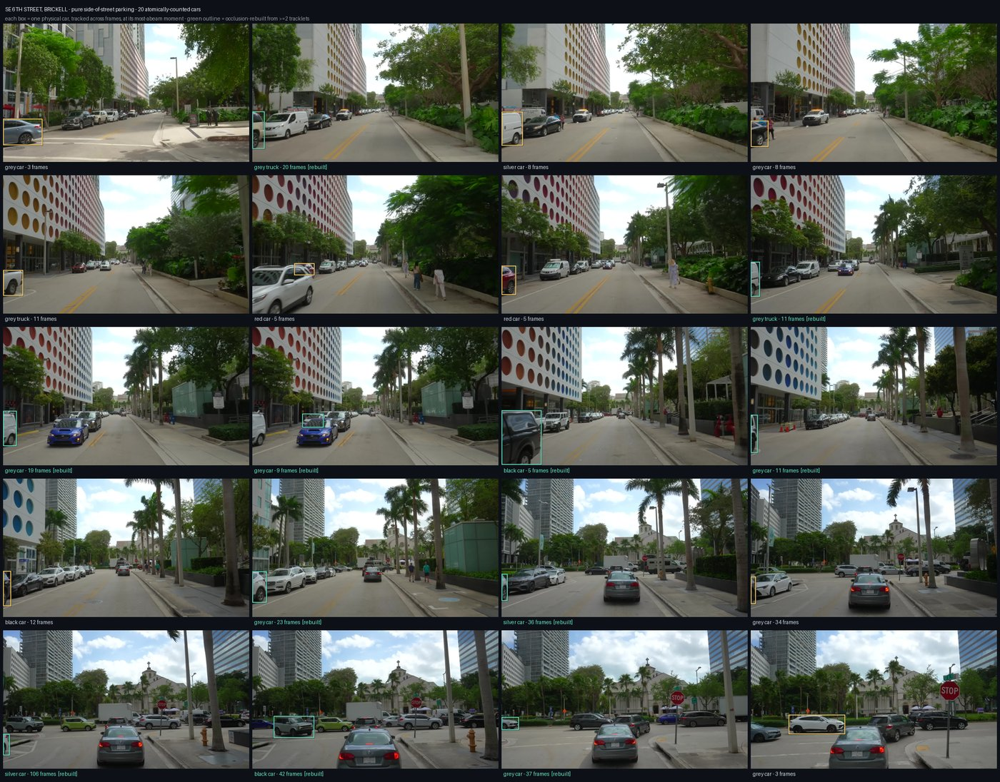
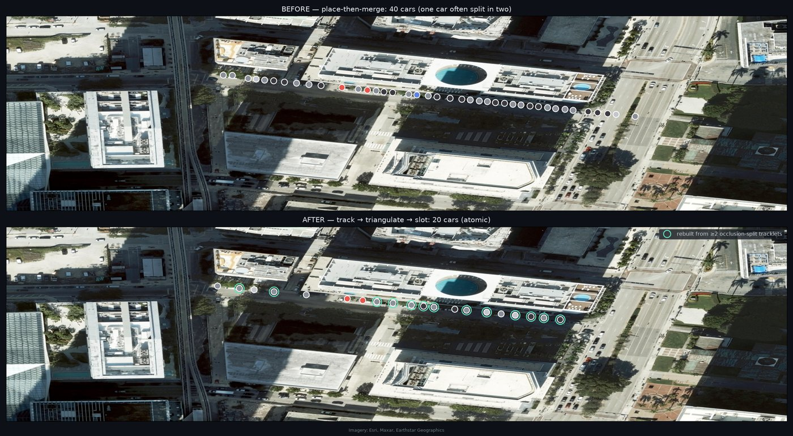
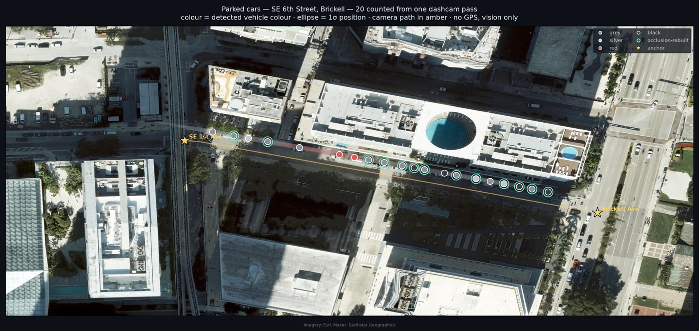
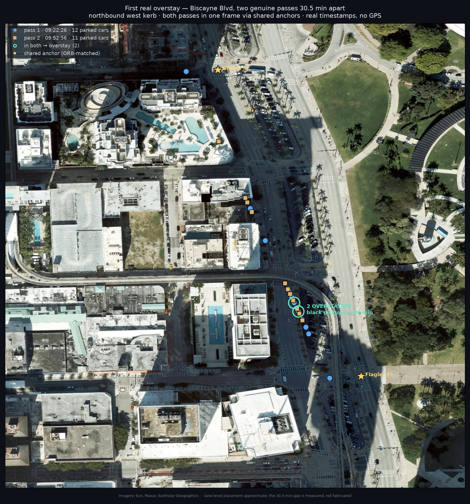
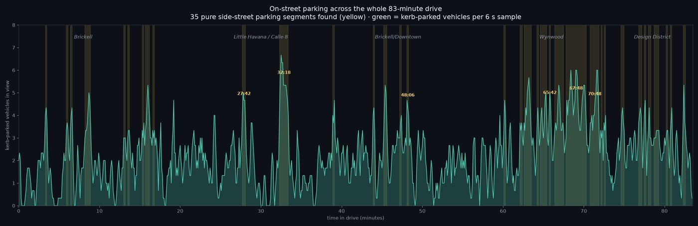

A car with a camera drives a street. Software finds every parked car, drops each one on a map in real coordinates, checks it against ParkMobile's paid-zone database, and — across two passes — flags the overstayers. All without reading a licence plate, and without GPS.

RF-DETR finds kerb-side vehicles the frame at a time — the geometry a plate-reader can't use.
Link a car across frames as the camera passes, so it's one car, not many detections.
Fix each car's spot from all its viewing angles at once; reject anything moving with traffic.
Collapse to physical cars, place in lat/lon, colour and type tagged for re-identification.
Cross-reference the position against ParkMobile's own paid-zone geometry.
Match the same car across two passes, hours apart — the loiterers fall out.




The vision (detect, count, colour, both kerbs) is solid everywhere. Absolute position depends on what the street offers to anchor to:
| Street type | Along-street error |
|---|---|
| Has readable street-name signs (arterials) | ~metres — lands on individual spots |
| Bare grid, no signs (side streets) | scale correct, ±1 block absolute |
The one thing that collapses this to metre-accuracy everywhere is a GPS feed on the vehicle — which every enforcement vehicle already has. Everything here is what the pixels alone give you. Tried and ruled out, so the limits are known not guessed: drone imagery, public traffic cameras (1 of 383 near a paid kerb, and it's a highway), and matching video to public street-imagery.